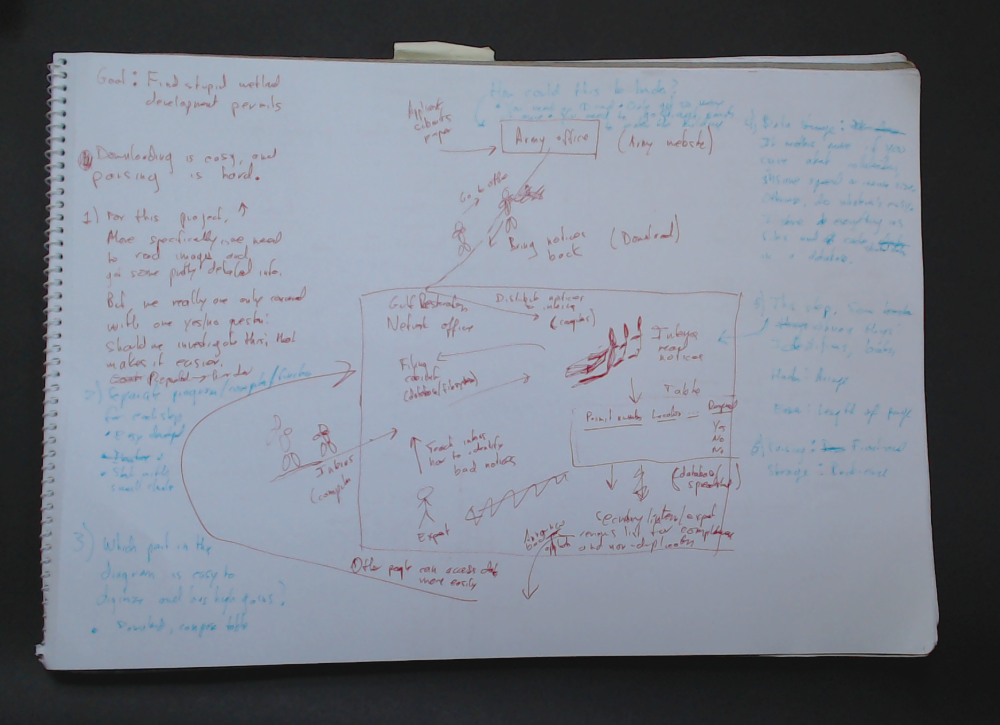
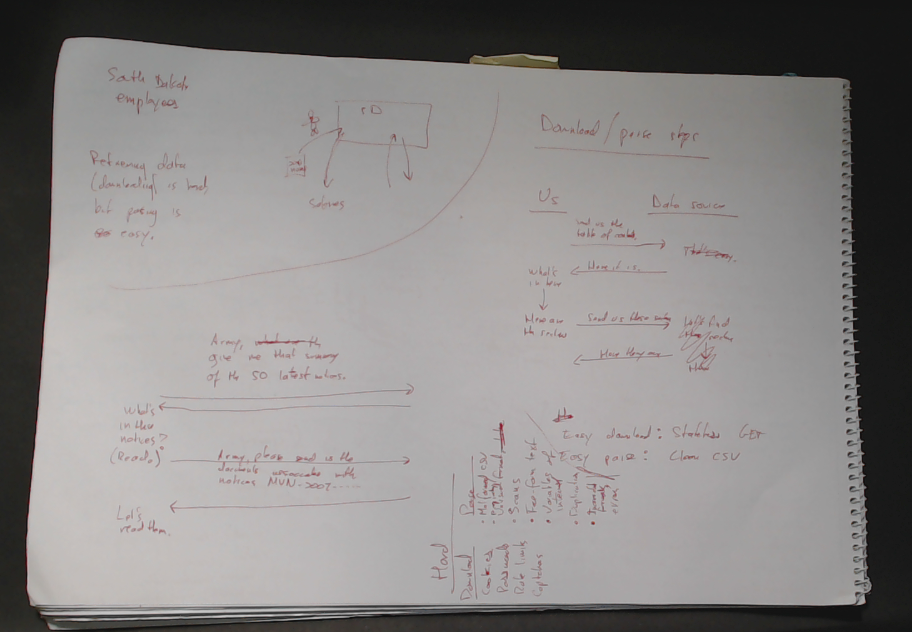
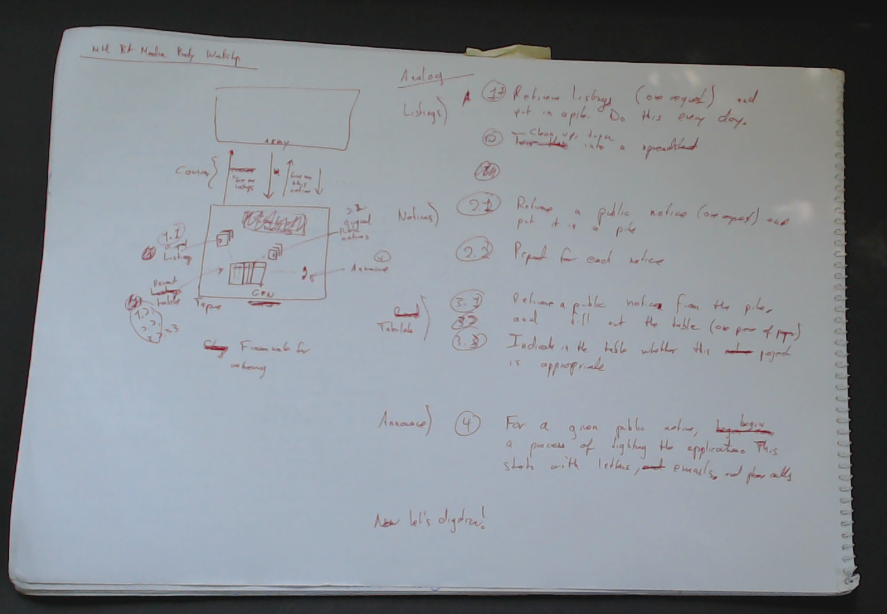

I went to a three-day party in Buenos Aires this past month. The first two days were talks and workshops,
I gave a talk on how awesome I am and a workshop on cleaning data. The latter involved no computers and no slides, so I held it outside!
I modeled an analog version of the Army Corps 404 Website Scraper—what it might have been like before the internet. I took volunteers to play the a courier, an army secretary and staff/volunteers at an advocacy group. The simulated advocacy group acquired paper notices about applications to build on wetlands, archived the notices, recorded some structured information on a table (with four legs!) and then tried to find notices that should not be approved. I had no slides for the workshop, but here are some of my notes/outlines.




The third day was a shockingly organized hackathon. Hacks/Hackers Buenos Aires has a website for discussing hackathon ideas. And people worked on it during the hackathon! Anyway, my team found references of money in court documents.
More importantly, I ate pizza, milanesa, empanadas, dulce de leche and ice cream.
More links
Newspaper articles about the party
Hipster non-print news about the party and about Hacks/Hackers Buenos Aires in general
- A Storify about day 2 by FOPEA
- La Nación data blog
- Hacks Hackers Buenos Aires blog and meetup.com page